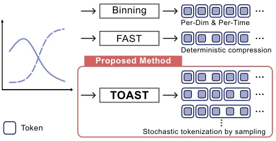
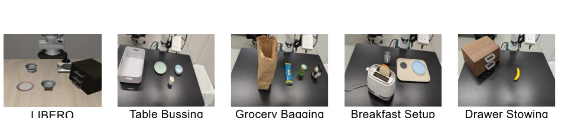
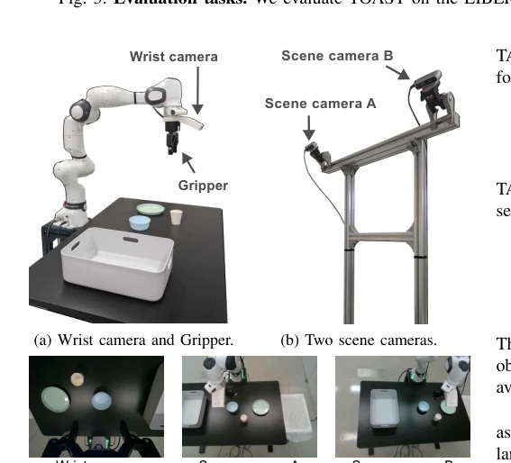
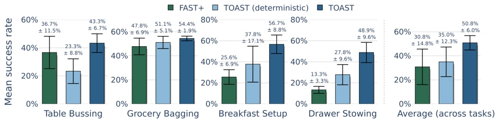
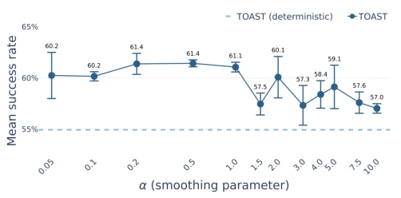
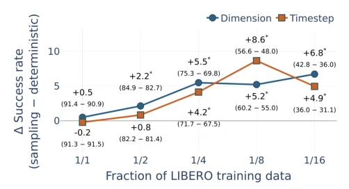

The name TOAST sounds like breakfast, but it actually adds a layer of 'randomness' seasoning to VLA models. It does not create a new architecture, but changes action tokenization from 'rigid' to 'flexible'. Although FAST [10] compresses well, deterministic tokenization causes policies to overfit specific boundaries and collapse with little data. TOAST uses a Unigram model to sample multiple tokenizations, equivalent to data augmentation. Real-world improvement is 15.8%, quite appealing. But limitations are obvious: does not support VQ-type Learned Tokenizer, only usable for frequency compression. For the school of thought pursuing end-to-end learning, this move is a 'patch' rather than a 'revolution'. Compute overhead is only 0.4%, but relies on Unigram assumption, may fail if action distribution is complex. And real-world experiments only on Franka single-arm, generalizability remains to be tested.
Autoregressive VLA relies on action tokenization [2], [5]. FAST [10] uses DCT+BPE compression, but deterministic tokenization causes the same action to correspond to a unique token sequence. This ignores tokenization ambiguity, similar to overfitting problems in NLP [15]. Robot demonstration costs are high [1]; when data is scarce, policies tend to memorize tokenization boundaries rather than the actions themselves. Existing methods like VQ-VLA [13] are flexible but training is complex. TOAST aims to solve: how to make policies not rely on a single tokenization representation under limited data, improving generalization. Especially when data is scarce, deterministic supervision causes policies to be overly sensitive to token boundaries rather than focusing on the physical actions themselves. This limits the policy's robustness in real-world scenarios, because real-world actions often exist in multiple expression forms.
The pipeline is divided into three steps. First, action quantization uses DCT transformation, dimension-major flattening (Dimension-major Flattening). Second, construct a Unigram language model, based on quantized sequence statistical probabilities. During training, perform n-best search on each action sequence, sampling multiple valid tokenization sequences as supervision targets, rather than fixing one. This increases supervision diversity. Finally, restore determinism during inference, greedy prediction. The core innovation lies in random sampling during the training phase, not changing decoding logic, only changing the training target distribution. Unigram model iteratively optimizes vocabulary probabilities, pruning low-contribution tokens. Sampling parameter alpha controls distribution sharpness, small alpha is more random. This process only adds a small amount of compute overhead (0.4%). Specifically, linear time search is implemented via Forward-DP Backward-A* algorithm to ensure training efficiency. Dimension-major flattening preserves temporal adjacency, helping to capture action temporal features.
Tested on LIBERO simulation and 4 real-world tasks. Baselines include Binning [5], FAST+, VQ-VLA [13], BEAST [26], etc. Metric is success rate. When LIBERO data is halved, TOAST is significantly better than the deterministic version. Improvement of 6.8% under 1/16 data. Real-world task improvement 15.8%. Analysis shows randomness reduces policy sensitivity to specific tokenizations. The less data, the greater the gain. Compute overhead is almost negligible. Ablation experiments verify alpha parameter robustness, and vocabulary source (DROID vs LIBERO) does not affect gains. Dimension-major flattening effect is better than time-major. Real-world tasks include Table Bussing, etc., demonstrating robustness improvement in complex grasp and place tasks.
其他图片Other Figures

Fig. 1: We propose TOAST, a novel framework that intro- duces stochastic action tokenization to enable efficient policy learning with supervision diversification while preserving the underlying action.

Fig. 3: Evaluation tasks. We evaluate TOAST on the LIBERO benchmark and four real-robot manipulation tasks.

Fig. 4: Our real robot setup. The robot (Franka Research 3) is equipped with a wrist camera (RealSense D405) and a Robotiq 2F-85 Gripper. Two scene cameras (RealSense D435) are placed facing the robot.

Fig. 5: Real-robot task results. We evaluate policies with three different tokenizations: TOAST, TOAST (deterministic), and FAST+. Each policy is evaluated based on 30 rollouts per task with three random seeds. TOAST achieves the highest success rate (50.8%), improving performance of TOAST (deterministic) by 15.8 points and FAST+ by 20.0 points.

Fig. 6: LIBERO (1/8) results with varying sampling hyperparameter α. Performance is stable for α ∈[0.05, 1.0] and degrades toward the deterministic baseline for larger α.

Fig. 7: Success rate gain by sampling. * denotes a signif- icant improvement over the deterministic baseline. In both flattening directions, stochastic action tokenization tends to achieve more improvements when limited data is available.